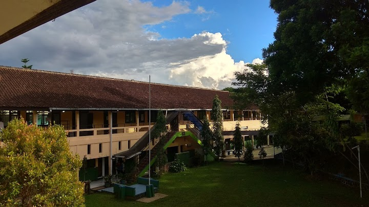
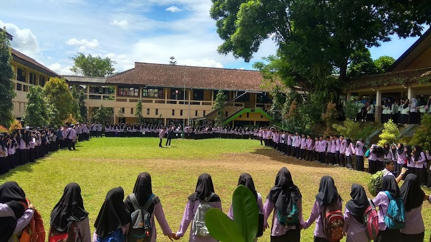
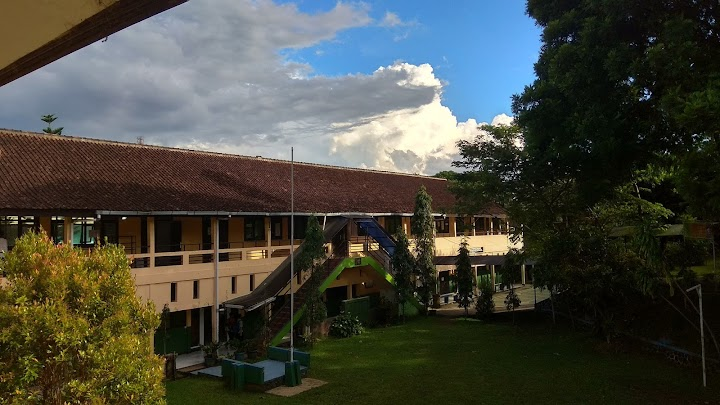
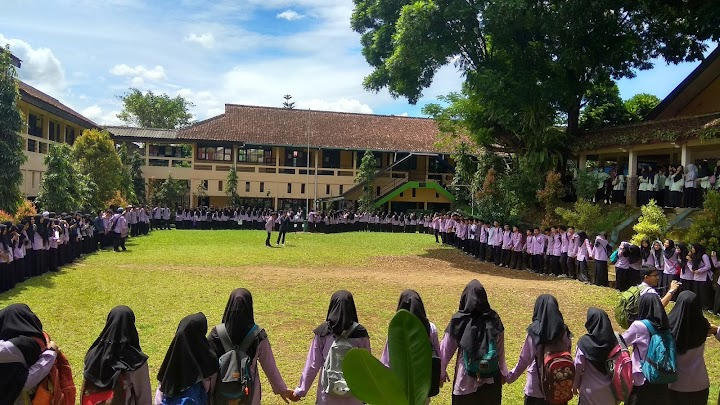

ABOUT
Pada bulan Januari 2004 SMU Negeri 1 Parungkuda berubah nama menjadi SMA Negeri 1 Parungkuda. Adapun yang menjadi Pimpinan Sekolah yaitu: NO. Tahun Nama
(1984 – 1987) R. Agustin Natamihardja (PJS)
(1987 – 1988) Drs. Duduh Suryatman
(1988 – 1989) Drs. I. Lili Suriat mana (PJS)
(1989 – 1996) Drs. A. Sunusi Mustofa
(1996) Drs. M. Soleh Dimyati (PJS)
(1996 – 2001) Drs. Moch. Sodikin Somaatmadja
(2001 – 2002) Drs. Adipermana Suparman
(2002 – 2008) Drs. Abdul Rochman
(2008 – 2011) Drs. Shodiq, M.MPd.
(2011 – Sekarang) Drs. Ogi Suprayogi, M.MPd.
Sekolah Menengah Atas Negeri 1 Parungkuda memiliki kode NPSN 20202254 dan NSS 301020617009. Saat ini Kepala SMA Negeri 1 Parungkuda yaitu Drs. Ogi Suprayogi,M.M.Pd. dan memiliki 4 Wakil Kepala Sekolah yaitu Sumardi, M.Pd (Bidang Kurikulum), Drs. H.E Raehan (Bidang Sarana dan Prasarana), Zulkarnaini, S.Pd, Ek (Bidang Kesiswaan/Pembina OSIS), dan Ade Rustandy, S.Pd, MM., (Bidang Humas)
FASILITAS
Masjid
Perpustakaan
Laboratorium Biologi
Laboratorium Fisika
Laboratorium Kimia
Laboratorium Komputer
Laboratorium Bahasa
Ruang OSIS
Lapangan Olahraga (Basket/Voli dan Futsal)
Kantin
Koperasi Siswa
Ruang UKS
Sanggar Pramuka
Toilet
Gedung seni